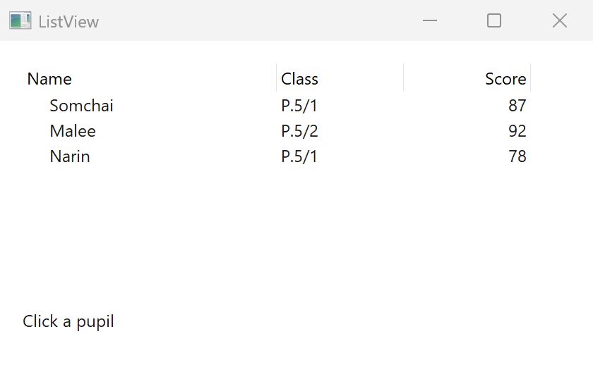

รายการ (ListView)
ในกล่องเครื่องมือ: รายการ · เทียบกับ WinForms: ListView
ตารางที่มีหลายคอลัมน์ แต่ละแถวเป็นข้อมูลหนึ่งชุด เช่น รายชื่อนักเรียนกับห้องและคะแนน (ถ้าต้องการให้แก้ในช่องได้และผูกฐานข้อมูล ใช้ ตารางข้อมูล (DataGridView))
- กำหนดคอลัมน์ตอนออกแบบใน Columns (บรรทัดละ
ชื่อ:ความกว้าง) · ColumnAlign ชิดซ้าย/ขวาทีละคอลัมน์ เช่น ตัวเลขชิดขวา - แถวและคอลัมน์นับจาก 0 ·
cell(แถว, คอลัมน์)อ่านช่อง - Icons รูปเล็ก ๆ หน้าแถว เช่น
CONTACT #12855f(ชื่อรูป สี) · View ดูแบบตาราง รูปใหญ่ หรือรูปเล็กได้

อยู่ในกล่องเครื่องมือกลุ่ม คอนโทรลทั่วไป (Common controls) - ลากมาวางบนฟอร์ม แล้วตั้ง Id (ชื่อที่ใช้ในโค้ด) ในหน้าต่าง Properties · ในโค้ดเรียกมันว่า ui.ชื่อId ซึ่งเป็นชนิด phai_ui::ctl::ListView
ตัวอย่าง
1. ใส่แถว
หนึ่งแถว = ข้อความของทุกคอลัมน์ เรียงตามลำดับ - items_add_with_icon ใส่รูปที่ 0 ของ Icons ไว้หน้าแถวด้วย:
fn loaded(&mut self, ui: &ListDemoUi) {
// A row: its cells, one for each column - and picture 0 of the list's Icons.
ui.pupils.items_add_with_icon(&["Somchai", "P.5/1", "87"], 0);
ui.pupils.items_add_with_icon(&["Malee", "P.5/2", "92"], 0);
ui.pupils.items_add_with_icon(&["Narin", "P.5/1", "78"], 0);
}2. อ่านแถวที่เลือก
เลือกแถวแล้ว method …_chosen ทำงาน:
fn pupils_chosen(&mut self, ui: &ListDemoUi) {
if let Some(row) = ui.pupils.selected_index() {
// cell(row, column) - both counted from 0.
let name = ui.pupils.cell(row, 0);
let score = ui.pupils.cell(row, 2);
ui.shown.set_text(&format!("{name} scored {score}"));
}
}หน้าต่างตัวอย่างทั้งหมด: list_demo.phaiform กับ list_demo.rs ในโปรเจกต์ docs/help-src/examples/controls - รันด้วย cargo run -- list
Method ของ ListView
| Method | ทำอะไร |
|---|---|
items_add(cells: &[&str]) -> usize | เพิ่มแถว: ข้อความของแต่ละคอลัมน์ ได้ตำแหน่งของแถว |
items_add_with_icon(cells: &[&str], icon: usize) -> usize | เพิ่มแถวพร้อมรูปที่ icon ของ Icons |
set_item_icon(at: usize, icon: usize) | เปลี่ยนรูปของแถว at |
set_icons(icons: &str) | ตั้งรูปทั้งชุดแบบเดียวกับ property Icons เช่น "FOLDER #d9a400, DOCUMENT" |
items_remove_at(at: usize) | ลบแถว at |
items_clear() | ลบทุกแถว |
items_count() -> usize | มีกี่แถว |
cell(row: usize, col: usize) -> String | ข้อความในช่อง (แถว, คอลัมน์) |
set_cell(row: usize, col: usize, text: &str) | เปลี่ยนข้อความในช่อง (แถว, คอลัมน์) |
selected_index() -> Option<usize> | แถวที่เลือก (แถวแรก ถ้าเลือกหลายแถว) |
selected_indices() -> Vec<usize> | ทุกแถวที่เลือก |
select(at: usize) | เลือกแถว at แถวเดียว และเลื่อนไปให้เห็น |
ensure_visible(at: usize) | เลื่อนให้เห็นแถว at |
checked(at: usize) -> bool | แถว at ติ๊กอยู่ไหม (เมื่อ CheckBoxes = True) |
set_checked(at: usize, on: bool) | ติ๊กหรือเอาติ๊กออกที่แถว at |
begin_update() | หยุดวาดชั่วคราวระหว่างใส่แถวจำนวนมาก แล้วเรียก end_update |
end_update() | กลับมาวาดตามปกติ |
Method ที่ control ทุกตัวมี (ข้อความ เปิด/ปิด แสดง/ซ่อน ตำแหน่ง …)
| Method | ทำอะไร |
|---|---|
hwnd() -> HWND | ตัว control เอง (HWND) ใช้กับคำสั่งของ Windows ที่ต้องการหน้าต่าง - เหมือน Handle |
text() -> String | อ่านข้อความของมัน |
set_text(s: &str) | เปลี่ยนข้อความของมัน |
enabled() -> bool | ใช้งานได้อยู่ไหม |
set_enabled(on: bool) | true ใช้งานได้ · false เป็นสีเทา กดไม่ได้ |
visible() -> bool | มองเห็นอยู่ไหม |
set_visible(on: bool) | แสดงหรือซ่อน |
show() | แสดง |
hide() | ซ่อน |
focus() | ให้แป้นพิมพ์มาที่มัน |
focused() -> bool | แป้นพิมพ์อยู่ที่มันไหม |
bring_to_front() | ยกขึ้นไปอยู่บนสุด เหนือ control ที่ซ้อนกัน |
send_to_back() | ส่งไปอยู่ล่างสุด |
refresh() | วาดใหม่ทันที |
invalidate() | ขอให้วาดใหม่ (Windows วาดให้เมื่อว่าง) |
bounds() -> RECT | ตำแหน่งและขนาดบนหน้าต่าง (RECT) |
client_size() -> (i32, i32) | ความกว้างและความสูงด้านใน (กว้าง, สูง) |
set_bounds(x: i32, y: i32, w: i32, h: i32) | ย้ายและเปลี่ยนขนาด: x, y, กว้าง, สูง |
point_to_screen(x: i32, y: i32) -> (i32, i32) | แปลงจุดบน control เป็นจุดบนจอ |
point_to_client(x: i32, y: i32) -> (i32, i32) | แปลงจุดบนจอเป็นจุดบน control |
find_form() -> HWND | หน้าต่าง (ฟอร์ม) ที่มันอยู่ |
suspend_layout() | หยุดจัดตำแหน่งชั่วคราว ระหว่างเปลี่ยนหลายอย่างพร้อมกัน |
resume_layout() | จัดตำแหน่งต่อ หลัง suspend_layout |
set_tooltip(text: &str) | ข้อความเล็ก ๆ ที่ขึ้นเมื่อชี้เมาส์ค้างไว้ - เหมือน ToolTip |
do_drag_drop(text: &str) -> bool | เริ่มลากข้อความนี้ออกไปวางที่อื่น |
set_cursor(name: &str) | รูปเมาส์เมื่อชี้มัน เช่น "hand", "wait", "ibeam" |
Properties
ตั้งได้ในหน้าต่าง Properties เมื่อเลือกมันบนฟอร์ม - ตารางนี้สร้างจาก Phai Studio เอง จึงตรงกับที่เห็นในโปรแกรมเสมอ
| Property | ค่าเริ่มต้น | ทำอะไร |
|---|---|---|
| ออกแบบ | ||
| รหัส | list | ชื่อ control ในโค้ด และ #id ใน CSS |
| คลาส | - | คลาส CSS จากธีม เช่น primary หลายคลาสคั่นด้วยช่องว่าง |
| ล็อก | False | ล็อกไว้: เมาส์และปุ่มลูกศรจะไม่ย้ายหรือปรับขนาดในหน้าออกแบบ |
| รูปลักษณ์ | ||
| ฟอนต์ | Segoe UI, 9pt | ขนาดและน้ำหนักของตัวอักษร - Segoe UI, 9pt คือของ Windows |
| ขนาดฟอนต์ | - | ขนาดตัวอักษร (พอยต์) ของ control นี้ ทับของฟอร์ม |
| ตัวหนา | False | แสดงข้อความเป็นตัวหนา |
| สีพื้น | - | สีพื้นหลัง ทับธีม - เขียนเป็น CSS #id { background } |
| สีตัวอักษร | - | สีข้อความ ทับธีม - #id { color } |
| สีขอบ | - | สีขอบ ทับธีม - #id { border-color } |
| มุมมน | - | ความมนของมุม เป็นพิกเซล - #id { border-radius } |
| ToolTip | - | ข้อความที่ขึ้นเมื่อวางเมาส์ค้างไว้ |
| Cursor | default | รูปตัวชี้เมาส์เมื่ออยู่บนตัวนี้ |
| Border width | - | ความหนาของขอบ (พิกเซล) - #id { border-width } |
| Animation | - | สีเคลื่อนไหวเอง: blink 1s infinite (กะพริบ), pulse 1.5s infinite (เต้น), fade-in 400ms (ค่อย ๆ ปรากฏ) หรือ @keyframes ในธีม - #id { animation } |
| FontFamily | - | แบบตัวอักษรของข้อความ เช่น Consolas สำหรับ log ส่วน Segoe UI คือแบบของ Windows เอง |
| Transition | - | สีค่อย ๆ เปลี่ยนเมื่อสถานะเปลี่ยน เช่น 150ms, 0.3s ease-out - #id { transition } |
| View | details | แสดงเป็นแถวพร้อมคอลัมน์ หรือแสดงแต่รายการ |
| Icons | - | รูปที่แต่ละแถวแสดง (LargeImageList, SmallImageList): ชื่อไอคอนพร้อมสี เช่น MONITOR #12855f, MONITOR #8a9a90 แถวไหนใช้รูปไหน เลือกในโค้ดตามลำดับ: items_add_with_icon |
| ColumnAlign | - | ข้อความของแต่ละคอลัมน์ชิดซ้าย กลาง หรือขวา ตามลำดับ เช่น left, right, left ให้ขนาดไฟล์ชิดขวา (ColumnHeader.TextAlign) |
| IconSpacing | - | ที่ว่างของแต่ละรายการเมื่อแสดงเป็นไอคอน กว้างพอให้ชื่อยาว ๆ ใต้ไอคอนแสดงครบ เช่น 120, 76 |
| GridLines | False | เส้นคั่นระหว่างแถวและคอลัมน์ |
| CheckBoxes | False | มีช่องติ๊กหน้าแต่ละรายการ |
| HeaderStyle | clickable | แสดงหัวคอลัมน์ หรือไม่แสดง |
| พฤติกรรม | ||
| ใช้งานได้ | True | ใช้งานได้ หรือแสดงเป็นสีเทา |
| มองเห็น | True | แสดงเมื่อเปิดหน้าต่างหรือไม่ |
| TabIndex | - | ลำดับที่ปุ่ม Tab เลื่อนผ่าน ถ้าไม่ตั้งใช้ลำดับในฟอร์ม |
| TabStop | True | ปุ่ม Tab หยุดที่ตัวนี้หรือไม่ |
| AllowDrop | False | ลากไฟล์จาก Explorer มาวางได้ - ใช้ event DragDrop |
| FullRowSelect | True | คลิกแล้วเลือกทั้งแถว |
| MultiSelect | True | เลือกได้หลายแถวพร้อมกัน |
| HideSelection | False | แถวที่เลือกจะไม่แสดงเมื่อโฟกัสไปที่อื่น |
| ข้อมูล | ||
| คอลัมน์ | Name:120
Value:100 | บรรทัดละหนึ่งรายการ คอลัมน์ของรายการเขียนเป็น ชื่อ:ความกว้าง |
| การจัดวาง | ||
| ตำแหน่ง | 12, 12 | มุมซ้ายบนนับจากของฟอร์ม ที่สเกล 100% |
| X | 12 | ระยะจากซ้ายของฟอร์ม ที่สเกล 100% |
| Y | 12 | ระยะจากบนของฟอร์ม ที่สเกล 100% |
| ขนาด | 120, 24 | ความกว้างและความสูง ที่สเกล 100% |
| กว้าง | 120 | ที่สเกล 100% |
| สูง | 24 | ที่สเกล 100% |
| ติดขอบ | none | ติดขอบหนึ่งของฟอร์ม หรือเต็มพื้นที่ที่เหลือ |
| ยึดขอบ | left top | ขอบที่รักษาระยะไว้เมื่อหน้าต่างขยาย |
Events
ดับเบิลคลิกชื่อ event ในแท็บ Events ของ Properties แล้ว Phai Studio จะเขียน method ให้ (ชื่อในตารางนี้สมมติว่า Id ของมันคือ list และอยู่บนฟอร์ม MainWindow) - ชี้เมาส์ที่ชนิดของ e เพื่อดูชื่อเต็ม
| Event | ทำอะไร | method ที่ Phai Studio เขียนให้ |
|---|---|---|
| เลือก | เมธอดที่ทำงานเมื่อเกิดเหตุการณ์นี้ ดับเบิลคลิก control เพื่อเขียน | fn list_chosen(&mut self, ui: &MainWindowUi) |
| Click | ถูกคลิกด้วยปุ่มซ้าย | fn list_click(&mut self, ui: &MainWindowUi) |
| DoubleClick | ถูกดับเบิลคลิก | fn list_double_click(&mut self, ui: &MainWindowUi) |
| Enter | ได้รับโฟกัส แป้นที่กดต่อไปจะเข้าตัวนี้ | fn list_enter(&mut self, ui: &MainWindowUi) |
| Leave | โฟกัสย้ายไปที่อื่น | fn list_leave(&mut self, ui: &MainWindowUi) |
| KeyDown | กดแป้นขณะมีโฟกัส - e.key, e.ctrl; เรียก e.set_handled() เพื่อไม่ให้ control ได้รับแป้นนั้น | fn list_key_down(&mut self, ui: &MainWindowUi, e: &KeyEventArgs) |
| KeyUp | ปล่อยแป้นขณะมีโฟกัส | fn list_key_up(&mut self, ui: &MainWindowUi, e: &KeyEventArgs) |
| KeyPress | พิมพ์ตัวอักษร - e.ch; เรียก e.set_handled() เพื่อไม่ให้ตัวอักษรเข้าไป | fn list_key_press(&mut self, ui: &MainWindowUi, e: &KeyPressEventArgs) |
| MouseEnter | เมาส์เลื่อนเข้ามาบนตัวนี้ | fn list_mouse_enter(&mut self, ui: &MainWindowUi) |
| MouseLeave | เมาส์เลื่อนออกจากตัวนี้ | fn list_mouse_leave(&mut self, ui: &MainWindowUi) |
| MouseDown | กดปุ่มเมาส์บนตัวนี้ - e.x, e.y, e.button | fn list_mouse_down(&mut self, ui: &MainWindowUi, e: &MouseEventArgs) |
| MouseUp | ปล่อยปุ่มเมาส์บนตัวนี้ | fn list_mouse_up(&mut self, ui: &MainWindowUi, e: &MouseEventArgs) |
| MouseMove | เมาส์เคลื่อนบนตัวนี้ | fn list_mouse_move(&mut self, ui: &MainWindowUi, e: &MouseEventArgs) |
| MouseWheel | หมุนลูกล้อเมาส์บน control - e.delta ทีละ 120 ต่อหนึ่งจังหวะ มากกว่า 0 คือหมุนออกจากตัว | fn list_mouse_wheel(&mut self, ui: &MainWindowUi, e: &MouseEventArgs) |
| Resize | ขนาดเปลี่ยน - หน้าต่างถูกย่อขยายและตัวนี้ยึดขอบหรือ dock ไว้ | fn list_resize(&mut self, ui: &MainWindowUi) |
| DragDrop | มีของถูกวางลงมา: ไฟล์จาก Explorer (e.files) หรือข้อความที่ลากมาจาก control อื่น (e.text, e.source) | fn list_drag_drop(&mut self, ui: &MainWindowUi, e: &FileDropEventArgs) |
| ColumnClick | คลิกหัวคอลัมน์ - e.index นับจาก 0 | fn list_column_click(&mut self, ui: &MainWindowUi, e: &ItemEventArgs) |
ลองทำเอง
- คลิกหัวคอลัมน์ (event ColumnClick) แล้วแสดงว่าคลิกคอลัมน์ที่เท่าไหร่ (
e.index) - ตั้ง CheckBoxes = True แล้วนับว่าติ๊กกี่แถวด้วย
checked(i)